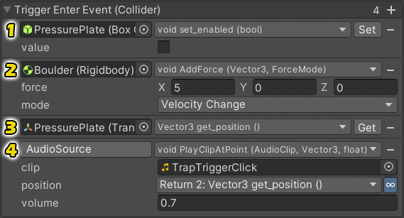

|
UltEvents is a Unity plugin which allows you to easily setup and configure persistent event callbacks via the Inspector. It serves the same purpose as the inbuilt UnityEvents, but has superior features with fewer restrictions and an improved Inspector interface which requires fewer clicks to perform individual tasks.
Download it for free and check out the Documentation to get started.
|
Example
This is what a Pressure Plate that triggers a Boulder trap might look like. It uses the TriggerEvents3D script which has several UltEvents that it executes in response to Unity's physics trigger messages. Specifically, it is using OnTriggerEnter to:

- Deactivate the Pressure Plate's
Collider so it can't be triggered again.
- Apply some force to the Boulder's
Rigidbody to start it rolling down a hill.
- Get the position of the Pressure Plate.
- Play the Trap Trigger Click sound at that position.
This was all done without writing any custom scripts and other than step #1, none of it could be done with a UnityEvent. Keep reading to find out why.
|
Parameter Types
UnityEvents can only call methods with the following parameter types: bool, int, float, string, or anything derived from UnityEngine.Object.
UltEvents support all those types as well as Enum (regular and flags), Vector (2, 3, 4), Quaternion, Rect, Color, and Color32.
Step #2 of the example above uses Vector3 and ForceMode (an Enum) parameters.
|
Parameter Count
UnityEvents can only call methods with 0 or 1 parameters.
UltEvents support any number of parameters.
Steps #2 and #4 of the example above both call methods with multiple parameters.
|
Access Modifiers
UnityEvents can only call public methods.
UltEvents allow methods with any access modifiers, including private and static.
Step #4 of the example above uses this to call AudioSource.PlayClipAtPoint. Other common static methods include Object.Instantiate and Debug.Log.
|
Return Values
UnityEvents can only call methods which return void.
UltEvents allow methods with any return type and allows the returned value to be used as a parameter in methods that come later in the list. If the value is not used it will simply be ignored.
Steps #3 and #4 of the example above use this to get the Transform.position and use that as the position at which the sound should be played.
|
Inspector Layout
UltEvents also have a much better Inspector interface than UnityEvents:
- Collapse the event into a single line to occupy less screen space.
- Parameterless functions only take a single line.
- Function parameter names are displayed. You can see the full method signature instead of only the name.
- Select a listener on a specific
Component when there is more than one of the same type on the target object.
- Drag listeners around to reorder them.
- Keyboard shortcuts and context menu functions allow you to easily Copy, Paste, Add, Delete, and even Invoke events.
- Better organized method selection menus which can be customised to suit your needs.
- Button to quickly find a similarly named method if the target is missing.
- Dynamic listeners are displayed in the footer (ones added by code).
Individual tasks also tend to require fewer clicks with UltEvents:
- Instead of needing to add a new listener then drag in a target, you can just drag the target onto the event header.
- Instead of needing to select a listener then press the remove button in the footer, each listener has its own remove button.
- If you assign a specific
Component as the target, it will immediately open the method selection menu which will let you select methods directly from that component instead of going through a sub-menu every time.
|
|
If you like this asset, please consider supporting me by buying some of my other assets:
- Animancer gives you the ability to play and control animations dynamically at runtime using simple scripts instead of manually configuring inflexible Animator Controllers that encourage bad programming practices.
- Inspector Gadgets provides a variety of enhancements to the Unity Editor which can be useful for anyone.
- Weaver lets you avoid littering your code with magic strings and provides a framework for generating procedural assets.
|